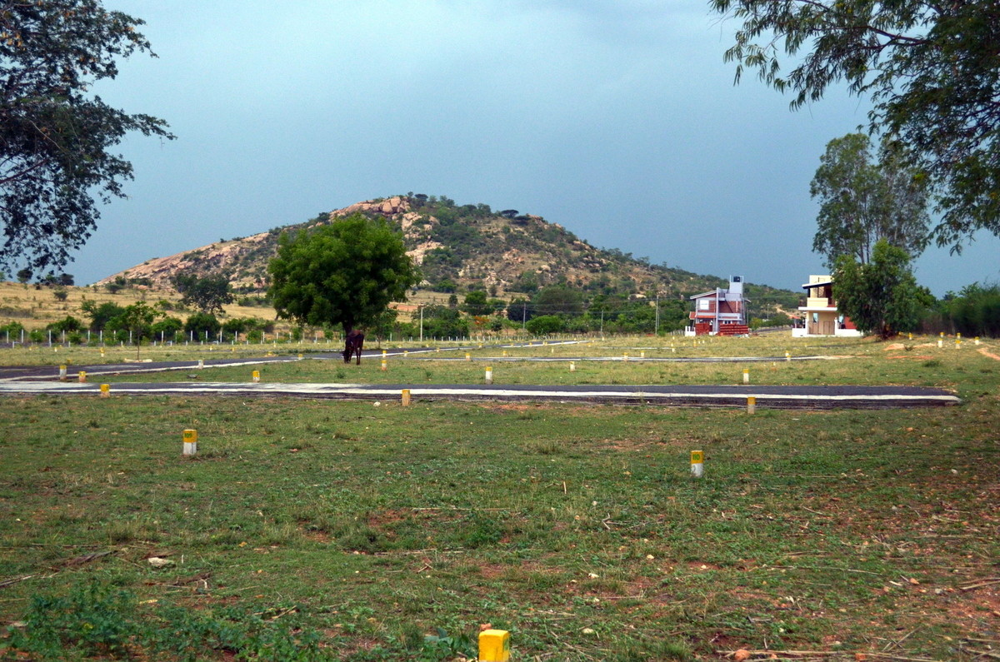
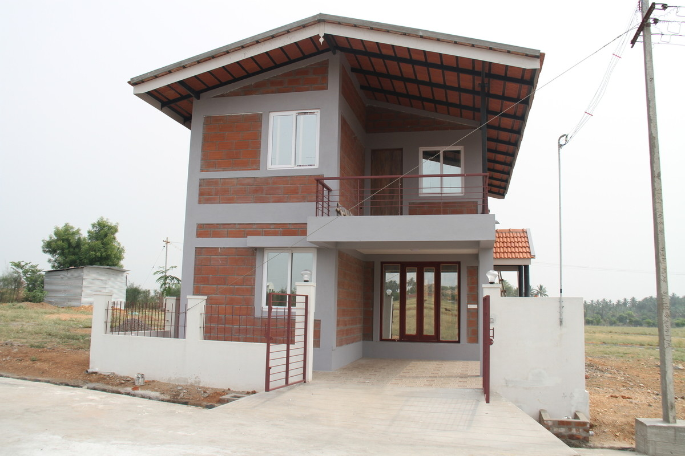
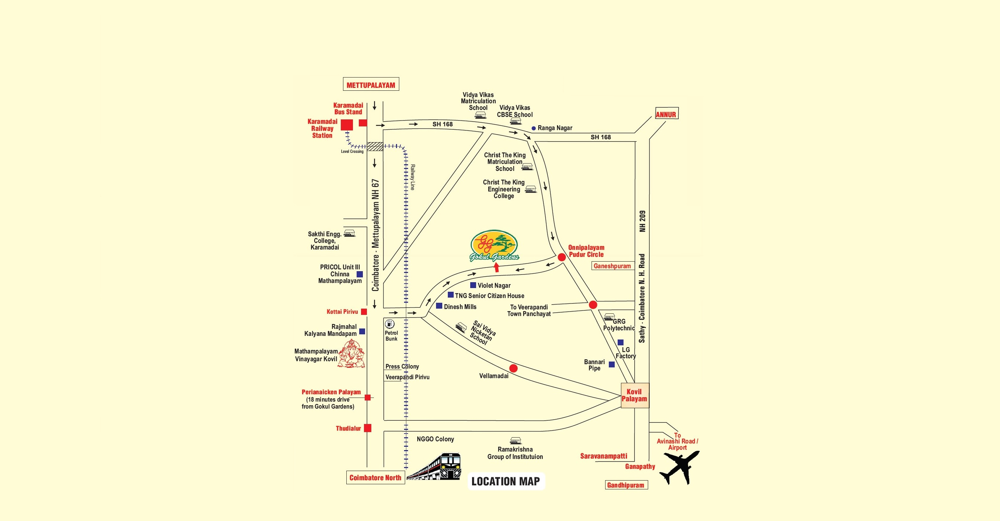

Gokul Gardens
Good living at a Budget
Vitrag Group
Gokul Gardens
Gokul Gardens is a DTCP approved layout located on the outskirts of Coimbatore. With over a 100 plots, the layout caters to good quality living at a reasonable value.

Gokul Gardens - Layout
The well-planned layout has wide roads, rainwater harvesting, overhead water storage tank, flowering trees and various parks across the layout. Located close to Mathampalayam, it is surrounded with 12 educational institutions and hospitals within 5 km.

Gokul Gardens - Plots
Our plots are fully approved residential plots which are priced affordably and are of between 1.5 cents to 6 cents. Each plot is surrounded with flowering trees and is less than 50 metres away from the park. Every plot has a beautiful view of the Nilgiris range and the surrounding hills.

Gokul Gardens - Homes
- 2 homes built at Gokul Gardens
Plot 15
Gokul Gardens - 15
- The 3 bedroom home is built on 3.5 cents of land. It serves as a model of home that will come up within the layout in the near future.
- The home is semi-furnished and has all the amenities that will be true to good living at a budget.
- The home in Gokul Gardens is supported by 2 sumps of 2,000 litres each. The kitchen is fully furnished with granite tops and modular fittings.
- A large portico and open spaces allows 1 cars and two-wheelers to be parked. A nice sitout on the 1st floor looks into the Western Ghats in the distance.
Gokul Gardens - 15

Gokul Gardens - 15

Gokul Gardens - 15 Factsheet
| Property | Plot 15 |
|---|---|
| Type of Property | Individual House/Villa |
| BHK | 2 BHK |
| Google Maps | https://www.google.co.in/maps/@11.2090587,76.9842009,185m/data=!3m1!1e3 |
| Built Up area | 2455 sq. ft. |
| Total Uncovered | 607.91 |
| Carpet Area | 1798.06 sq.ft |
| Plot Size | 1500 sq.ft. |
| Flooring | Vitrified Tiles |
| Roofing | Mangalore tiled roofing with "Poo wood" for insulation |
| Balcony | Yes |
| Plinth | Section walls 8" and partition walls 4" |
| Brick Quality | German Tech Outdoor Pholotherm cavity bricks for better insulation |
Gokul Gardens - 15 Factsheet
| Property | Plot 15 |
|---|---|
| Corner Plot? | No |
| Electrical Fittings | Havells electrical equipment |
| Light Fittings | Havells |
| Plumbing Fittings | UPVC pipes / Sanitary fittings of Tera brand |
| Feng Shui / Vaastu Compliant; | Yes |
| Reserved Parking; | Yes, within compound |
| Society | Eventually an Association will be formed. |
| Visitor Parking; | On Avenue road abetting the house. |
| Underground Water Storage; | Sump of 5,500 litres [4,500 litres - bore water 1,000 litres - |
| Overhead Tank = | 5000 litres [1000 litres corporation tank, 4000 litre brick wall OHT] |
| Sewage Disposal: | Septic tank = 4,000 litres , Soak pit = around 1,000 litres capacity |
| Rain Water Harvesting | Provision |
Gokul Gardens - 28
Benefits of being at Gokul Gardens
Some of the benefits the layout has to offer are:
1,50,000 litre overhead water tank
Rain water harvesting done throughout the layout to charge wells
Avenue trees along all roads with drip irrigation to support them for years together
Fully tarred 40 feet main road with 23/30 feet approach roads
Street Lighting & domestic EB connections available within layout
3 Parks spread over 50,000 sq.ft with Basketball, Volleyball and Badminton courts
DTCP Approved Plan along with Clear Title Deeds
10 mins from Karamadai & Periyanaickenpalayam Stations
2 NH highways within 5 mins drive
Location

Location (cont.)
- 2.25 kms off from NH 67 Coimbatore - Mettupalayam (i.e. 5 minutes driving time)
- 8 kms from NH. 209 Coimbatore - Sathy (aprox 20 min driving time)
both these highways are playing host to number of educational & business establishments
Saravanampatti (20 minutes driving time), located on the NH 209 is a hot spot in terms of real overall activity
Surroundings
Education
Mathampalayam and its vicinity are now home to number of schools and colleges
- Vidhya Vikas Mat
- School, Vidya Vikas CBSE School
- Christ The King International School
- Christ The King Engineering College
- KTVR Engineering College
There are atleast 12 educational institutions from with in 5 minutes to 25 minutes driving time from this place
Surroundings
Public places and amenities
- A number of Temples and Churches are within short distance
- Periyanaickenpalayam which is the next major town in this area is today home to Pricol Head Quarters and many ancillary units, number of hospitals, higher and school level educational institutions, service plus trade establishments. The fact that more than 10 banks including the banks like ICICI and a couple of departmental stores like Reliance Fresh have opened shops here are indicators of growth and development.
Special Features of the Gokul Gardens
Gokul Garden enjoys the view of large open farm lands on the eastern and northern side and the beautiful Nilgiris hills on the western side.
Avenue flowering trees like Gulmohar, Cordia, Yellow shower etc have been planted along the entire drive way and supported by drip irrigation. Besides this we have established a 10 height Cassurina hedge with about 3700 saplings to make up the western boundary. This hedge today has established itself as a 10 feet tall green screen.
Rain Water Harvesting has been planned along the entire 1800 odd feet - 40 wide drive way. This will not only improve the ground water charge, but will also help our bore well. The entire layout is VASTU complaint.
Roads
- 40' wide main road with 23'& 30' supporting roads leading to the plots. The roads are metal topped and have gradual taper to avoid water stagnation.
Park
- The entire eastern boundary has a park spread over one acre. This will ensure oxygen supply to the whole layout rather than being confined to a few pockets. Storm Water + waste water drain are built keeping rugged use in mind.
Approval
- Land has undergone conversion from agricultural to residential status by the Housing Department at Chennai and Local Planning Authority, Coimbatore.